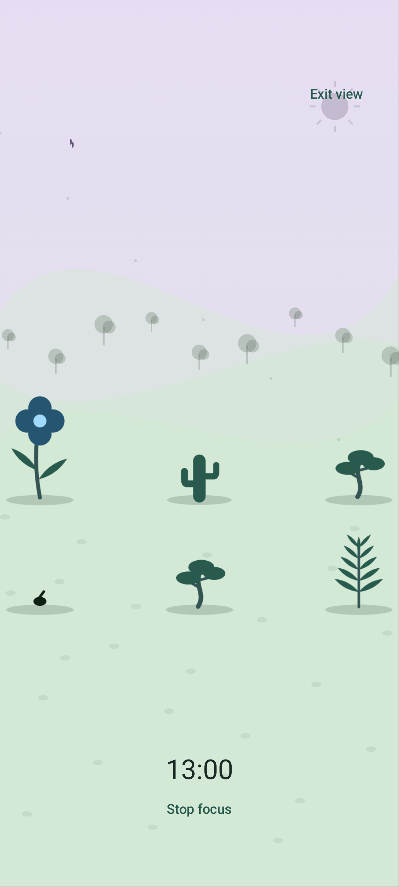
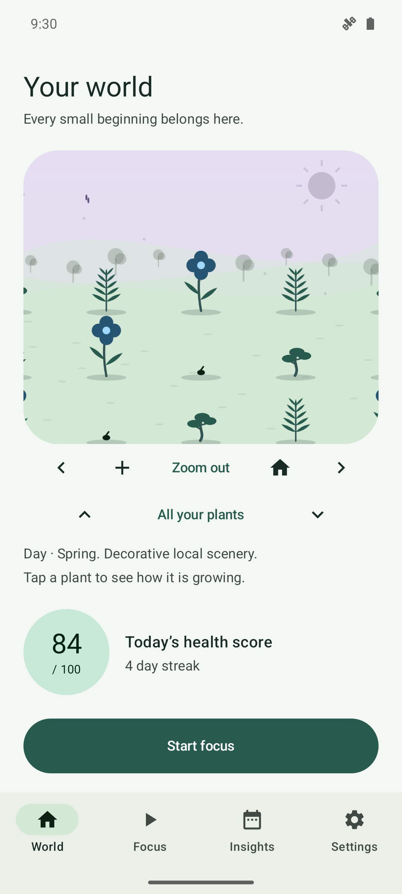
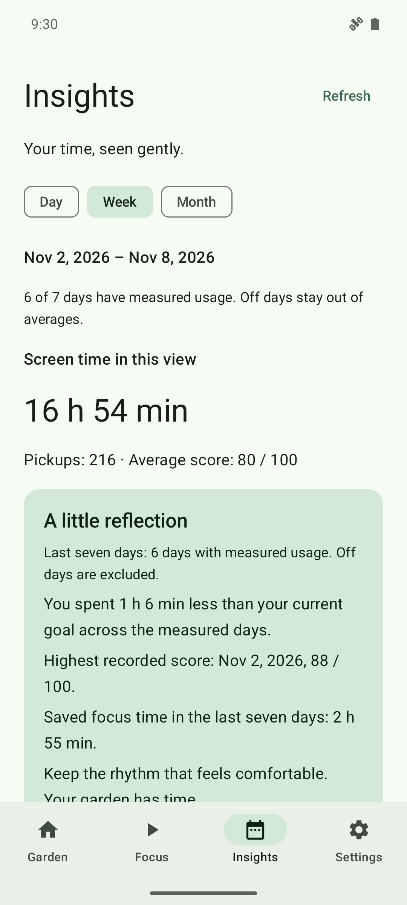
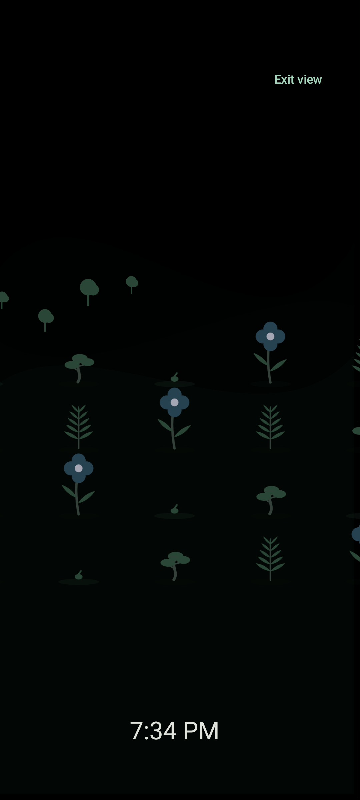
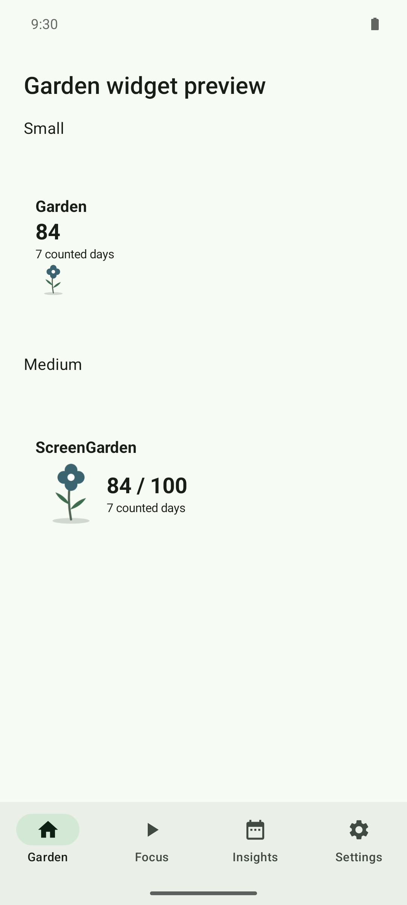

Give one thing your attention
Focus in your own world with a small calm timer. A plant grows during the session; leaving the view keeps your timer running.
A calmer relationship with your phone
A world that grows with your focus and daily habits. Explore older plantings, settle into fullscreen focus, or keep a quiet meadow beside you in Desk mode.
Free and open source. Android 8.0 and later.

No accounts
No ads or tracking
No internet permission
Always recoverable
You don’t need a perfect day. Quiet progress adds up, and a wilted plant is an invitation to begin again.

Focus in your own world with a small calm timer. A plant grows during the session; leaving the view keeps your timer running.

See local screen-time patterns and a simple weekly reflection. Set goals that fit your life, with compassion days when you need them.

Opt into a dim Desk meadow with an optional clock and slow pixel shifting. Motion respects low-power and reduced-animation choices. Pixel shifting cannot guarantee prevention of screen burn-in.
Every screenshot uses fake debug-only demo data on the Android emulator. No personal phone data is shown. Browse the full gallery.
A garden of your own
ScreenGarden works completely offline. It has no internet permission, no account system, and no analytics or advertising SDKs.
Pictures and unencrypted backups leave the app only when you choose a destination in Android’s file picker. A backup can contain private app usage; you decide where it goes.
Inspect the privacy boundary in the sourceUsage access helps measure screen time. Notifications enable optional reminders. You can skip both and still grow plants with focus.
Plants never disappear permanently. Optional app blocking stays off until you enable it and grant special access. Its service does not read screen content.
Open code, original open artwork and free GitHub distribution. No subscriptions, paid services or in-app purchases.
Keep a garden widget nearby, start focus from Quick Settings, or set a quiet garden wallpaper. Save a picture when you want to remember a good day.
Choose light, dark or true-black AMOLED, curated accents and low-power visuals. English and a Spanish sample are included.

Install directly from GitHub. No store account is needed.
Download v1.1.0Version 1.1.0 is available as a signed APK. Read the release notes and verification limits.
Open the release page and download the ScreenGarden APK. Android 8.0 or later is required.
Allow installation from your download app if Android asks. You can switch that permission off afterward.
Choose your goals. Usage access and notifications are optional; focus works without them.
Plants wilt gradually and can always recover. A calm day or completed focus session helps restore their health. Progress never requires a perfect streak.
Android exposes limited recent event history, and some devices omit events. ScreenGarden shows unknown data honestly instead of inventing a score. Previously stored measurements stay local.
Reminders and widget updates are approximate. Android sleep and manufacturer battery restrictions can delay work or timer completion. The app includes offline battery help, with version caveats.
The quality pass verified 384 JVM tests and 20 Android 15 integration tests, plus emulator layouts with larger text, Spanish, RTL and several sizes. Physical-device reliability, actual reboot/process death, full current Android 8 layouts, low-end performance and fluent Spanish review remain unverified. Read the quality report.